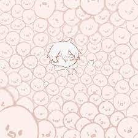

Ini adalah css color, dengan menggunakan background-color, kita bisa memberi warna pada background teks yang kita inginkan
Ini adalah 5px border-width bewarna merah
Ini adalah medium border-width bewarna hijau
Ini adalah border-width titik 2px berwarna biru
Ini adalah border-width tebal berwarna ungu
Ini adalah border sides, dimana sisi samping dan atas bawah berbeda
Ini adalah border-bottom, dimana border hanya dibawah saja
Ini adalah border-radius, dimana ujung border bisa di sesuaikan agar tidak terlalu lancip.
Contoh kita mengisi teks didalam border, dengan menggunakan margin, kita bisa memberi jarak border dengan luar.
Sedangkan dengan menggunakan pading, kita bisa memberi jarak teks dengan border.
Dengan menggunakan height, kita bisa mengatur ukuran tinggi pada elemen
Sedangkan dengan menggunakan width, kita bisa mengatur ukuran lebar pada elemen
Kita bisa mengubah elemen font dengan menggunakan css.
Display adalah salah satu property dalam CSS yang berguna untuk mengatur tampilnya suatu elemen.
1. Inline
Contoh elemen html yang memiliki default value inline, yaitu:
2. Block
Contoh default value block, yaitu :
contoh saat menggunakan tag li dengan display inline, maka akan menjadi 1 baris
Dan ini contoh dari display block, setiap dari akhir tag, akan berbeda baris
Max- Width digunakan untuk menentukan lebar maksimum dari suatu elemen
Dengan menggunakan position: static; tidak diposisikan dengan cara khusus apa pun itu selalu diposisikan sesuai dengan ukuran normal halaman
Dengan menggunakan position: relative; posisinya akan relatif terhadap posisi normalnya
Dengan menggunakan position: fixed; posisinya akan selalu di tempat yang sama meskipun di scroll
Value absolute digunakan untuk membuat suatu elemen bisa dipindahkan dan membuat elemen mengambang ke atas dibanding element lain.
position sticky adalah dimana ketika suatu elemen akan tetap berada di posisi yang sama meskipun di scroll, bedanya sticky bisa ikut di scroll dalam batas tertentu dan berhenti pada batas naik yang telah di tentukan melalui pengaturan CSS
Dengan menggunakan float, kita bisa memindahkan posisi dari elemen0
Ini adalah contoh dari float right yaaa. Gambarnya ada di sebelah kanan teks
Ini adalah contoh navigation bar horizontal
Ini adalah contoh dropdown menu
Ini adalah contoh form simple